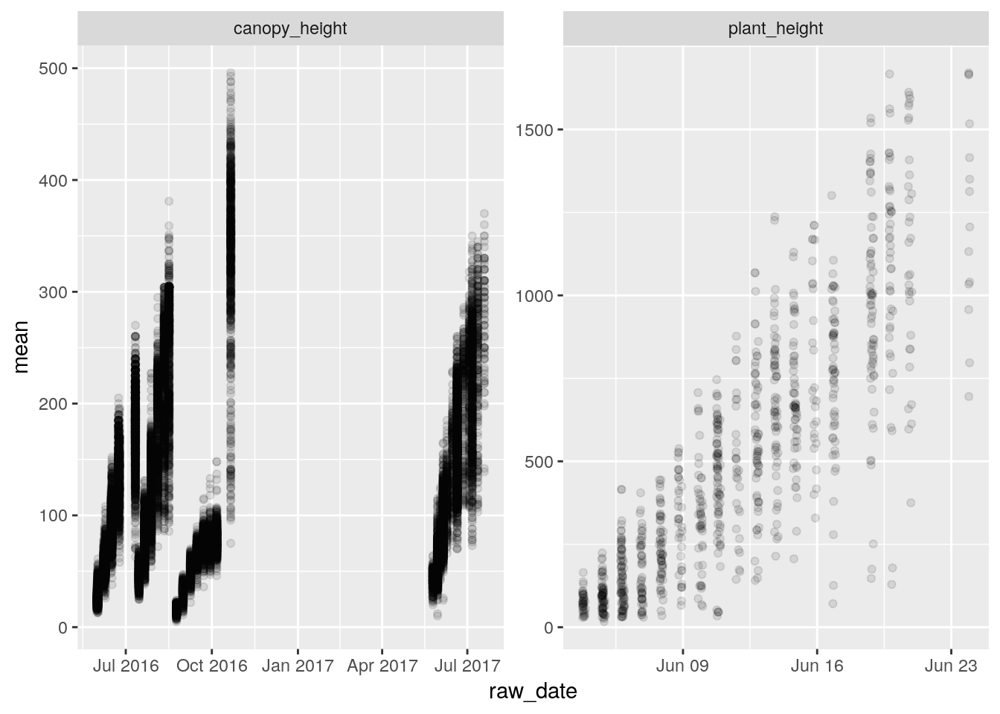

Overview
We started with an overview of data management, including the data lifecycle, metadata, and databases, using the TERRA REF to illustrate applications.
Spreadsheets and Tables
A database is a generic term for data. Often these are divided into ‘relational’ and ‘non-relational’… We will get to these later. First, lets start with Spreadsheets, which are a simple, and very common format for data.
In fact, so far we have been working with tables.
Example Spreadsheets
Later we will see how these data were re-organized in a relational database. These examples illustrate some common issues with organizing data in spreadsheets.
A collection of Miscanthus Yield data as a spreadsheet.
These data were found in published articles and organized in a spreadsheet.
What about this spreadsheet would make it difficult for a machine to interpret?
Sorghum Data from Arizona
These data were collected in Arizona, and will be used as ‘ground truth’ to calibrate and validate sensor-based data collections.
Let’s review the pages
- README is good. These researchers provide necessary information in a clearly identified worksheet.
- What additional information about the experiment are included?
- Where is the ‘primary’ data that a scientist might wish to analyze?
- What information is redundant?
- Is any useful information missing?
Download the table “PlantHeights_AllPlots” as CSV
Data Cleaning
- In this lesson, we will use Open Refine to find errors, sort, and clean our dataset.
- Note that some of the errors we find were introduced explicitly for teaching.
- Open the OpenRefine container in the NDSLabs workbench.
About Open Refine
This tutorial is based on the Data Carpentry Open Refine for Ecology lesson, modified to use our datasets.
You can learn more about and download Open Refine at openrefine.org.
Importing Data into Open Refine
Once OpenRefine is launched in your browser, the left margin has options to Create Project, Open Project, or Import Project. Here we will create a new project:
- Click
Create Project;Get data from this computershould be selected - what other ways can you get data into OpenRefine?
- Click
Choose Filesand select the file:DRAFT_Sorghum2_PlantHeights_AugustPlanting-training-sample - PlantHeights_AllPlots.csv - Click
Open–>Next - OpenRefine gives you a preview - a chance to show you it understood the file.
- did the file show up sensibly?
- In the upper right corner create a meaningful project name and then click
Create Project.
Faceting
OpenRefine supports faceted browsing. This allows you to see the big picture of your data and then filter down to a subset of rows. Once you have a target set of rows, you can apply changes in bulk.
Let’s work with one of the columns containing plant height measurements:
- next to one of the numeric columns “Plant_ht_Aug24” click the arrow
facet–>Numeric facet.- what went wrong?
- click
edit cells–>common transforms–>numeric - now try to click
facet–>numericagain- what do you see this time?
- How is a numeric facet different than a text facet?
- click “Plant_ht_Sep15”
- how many rows are there with non-numeric data?
- what to do here?
Let’s look at the Genotype field:
- select the arrow next to the column named “Genotype”
- select
Facet–>Text Facet - sort by
count - what do you notice?
- What is the level of replication in this study?
- Which genotypes are not like the others?
- why are there so many genotypes named “Great Scott” and “border”?
- Let’s clean up all whitespace problems
- trim leading and trailing whitespace
- trim consecutive white space
- now how many groups do we have?
- Edit “border” –> “Border”
TERRA REF Sites and Variables
Your turn:
Lets review a few datasets from the TERRA REF trait database. These are provided in the .json format by default:
- Look at the sites table. Where are the sites? Are there redundant names?
- import from https://terraref.ncsa.illinois.edu/bety/api/beta/sites?key=9999999999999999999999999999999999999999&limit=none
- when you review the data, select the lowest level of hierarchy so column names aren’t long concatenations of the entire tree.
- See if you can find any redundant variables
- Different formats
- note that you can also download these data as xml format by appending
.xmlto the table name, e.g....api/beta/variables.xml?... - Import the same variables table thus: https://terraref.ncsa.illinois.edu/bety/api/beta/variables?key=9999999999999999999999999999999999999999&limit=none
Miscanthus Yields
Lets look at the Miscanthus Yield dataset from earlier. This version of the data have been imported from the data we looked at in the spreadsheet above.
- Open –> Create Project –> From URL
- when you review the data, select the lowest level of hierarchy so column names aren’t long concatenations of the entire tree.
- See if you can find any redundant variables:
- import from https://terraref.ncsa.illinois.edu/bety/api/beta/variables.xml?key=9999999999999999999999999999999999999999&limit=none
- note that this is in XML format (the BETYdb API provide json, xml, and csv)
Open Refine
- Let’s look at the Miscanthus Yield dataset again
Open–>Create Project–>From URL- Enter https://www.betydb.org/search.csv?search=Ayield
- What is the matter here? Let’s clean up the imported dataset:
- columns are csv
- discard first 8 lines, parse next 1 line as column headers
- parse cells to numbers, dates, etc
Create Project
Downloading Data from a Web Interface
Go to betydb.org and enter “Miscanthus Yield” into the search box and click the search glass icon.
Let’s review the information in this table:
- Site with city
- Date + time + timezone
- Species + common name
- Cultivar
- Trait
- Mean (with units)
- Method
- Entity
Now click the “Download Results” button. This will download a .csv file.
How does this approach compare to accessing data using a URL?
How are the data in this database different from the data in the spreadsheets above?
Now click the Download Results button. This will download a .csv file. A .csv file is a table where each column is defined by a comma, e.g. a 3x3 matrix would be formatted thus:
row 1 col 1, row 1 col 2, row 1 col 3
row 2 col 1, row 2 col 2, row 2 col 3
row 3 col 1, row 3 col 2, row 3 col 3a brief note about csv files
By default, many computers will open the csv file directly into a spreadsheet program like Microsoft Excel or OpenOffice Calc. But because it is a text file, you can also open it in a text editor like Notepad, nano, or emacs.
It can also be easily read by any software or parsed at the command line using tools like cut and sed. Unlike xml and json, it is more intuitive for a human to read.
Tidy data
Tidy data means that:
- Each variable forms a column.
- Each observation forms a row.
- Each type of observational unit forms a table.
From tidyr vignette
YOUR TURN Is the Miscanthus dataset tidy? What would we need to do to make it tidy?
where are there redundancies?
- Site + city + lat + lon
- Date + time + timezone
- genus + scientificname + common name
- Cultivar
- Trait + units & description
- Mean
- Method
- Entity
Relational Databases and SQL
Some of the following is based on the Data Carpentry SQL Introduction for Ecology lesson.
The relational model for managing databases consists of representing the data in terms of tuples of relations. Many modern databases use some version of this. Structured Query Language or SQL is a language implementation based on the relational model, although there are some differences.
Data Normalization
“Codd’s Normal Forms” from Codd 1970:
process of organizing the columns (attributes) and tables (relations) of a relational database to reduce data redundancy and improve data integrity. Wikipedia - Database normalization
To motivate the use of a relational databases, let’s start by looking at a table. We want to see if there is redundant information that violates the best practice of having a single canonical representation for each piece of information.
Which of these fields has redundant data?
- SQL allows us to select and group subsets of data, do math and other calculations, and combine data.
- A relational database is made up of tables which are related to each other by shared keys.
- primary keys
- foreign keys
- natural keys
- Different database management systems (DBMS) use slightly different vocabulary, but they are all based on the same ideas.
How would you begin to normalize this data set?
Lets look at the BETYdb relational database
Database Management Systems
Common software: MySQL, PostgreSQL, Oracle, Access
These are the programs that store data and process queries.
Database Connections
There are many ways to connect to a relational database.
Two connection types: 1. via an API by constructing a URL as we did above (betydb.org/search?search=Miscanthus+Yield) 2. directly to the database server
For both of these approaches, there are ‘direct connections’ and ‘clients’. A ‘client’ is a way of making the interface easier.
For example with the R traits package, the function betydb_search("Miscanthus Yield") returns the table as an R dataframe. Otherwise, it would be necessary to determine the corresponding URL, download the csv, and then import it into R.
We can also either directly connect to the database and use SQL or connect to it with an R client.
Some different ways of connecting to BETYdb:
| connection type | language | package |
|---|---|---|
| SQL | SQL | N/A |
| SQL/ODBC | R + SQL | RPostgreSQL |
| SQL/ODBC | R / dplyr | dplyr |
| API | R | traits |
| API | URL |
We will run through these different connections below.
Why use an API? * it is more secure * it can abstract the database structure into a more familiar / human-friendly format
Why use SQL connection
- faster
- more access to all tables / joins in database
- can handle larger datasets and subset / summarize / filter before bringing into memory.
To connect to a database server you need the following connection parameters:
- host
- login
- user
- database (database name)
Lets connect to the terraref instance of betydb. Until now we have been accessing betydb.org. Now we will access (a copy of) the database behind terraref.ncsa.illinois.edu/bety
This connection is only available on the local *ncsa.illinois.edu network, and can be accessed through the NDS Labs workbench.
Host: terra-bety.default
Port: 5432
User: bety
Password: bety
DB: betyCommand line access
You can access the PostgreSQL command line in a terminal using the following command:
psql -U bety -d bety -h terra-bety.defaultFor security, you can hide your connection parameters in a hidden file called ~/.pgpass in your home directory that contains the following line:
terra-bety.default:5432:bety:bety:betyIt must have appropriate permissions, so after creating the above file run chmod 0600 ~/.pgpass.
Then you only need to type psql to log in
PostgreSQL Studio
There are many Graphical User Interface applications that make it easier to explore and manage databases. We will use PostgreSQL.
Open the PostgreSQL Studio application in the NDSLabs workbench and enter the connection parameters:
Host: bety6.ncsa.illinois.edu
Port: 5432
User: viewer
Password: DelchevskoOro
DB: betyTo connect in R and RMarkdown use:
library(RPostgreSQL)## Loading required package: DBIdbcon <- dbConnect(RPostgreSQL::PostgreSQL(),
dbname = "bety",
password = 'DelchevskoOro',
host = 'bety6.ncsa.illinois.edu',
user = 'viewer',
port = 5432)Tables & Schemas
This is an entity-relationship diagram:

A simplified entity–relationship diagram for key tables in Biofuel Ecophysiological Traits and Yields database (BETYdb).
Here is a more comprehensive entity-relationship diagram:

BETYdb Schema ER diagram
SQL
Here is a list of SQL Commands
Let’s start using some basic SQL Commands from the following list:
SELECT
WHERE
JOIN
DISTINCT
LIMIT
ORDER BY
GROUP BY
AND
OR
MIN
MAX
AVG
SUM
COUNT
LIKEExamples
Filter with where
Select can be used to view from a table, the symbol * is a wildcard:
select * from traits limit 10;
select * from traits where mean < 0;| id | site_id | specie_id | citation_id | cultivar_id | treatment_id | date | dateloc | time | timeloc | mean | n | statname | stat | notes | created_at | updated_at | variable_id | user_id | checked | access_level | entity_id | method_id | date_year | date_month | date_day | time_hour | time_minute |
|---|---|---|---|---|---|---|---|---|---|---|---|---|---|---|---|---|---|---|---|---|---|---|---|---|---|---|---|
| 6001791881 | 6000003524 | 2588 | 6e+09 | 6e+09 | 6e+09 | 2016-11-28 06:00:00 | 5 | NA | 9 | -0.79 | NA | NA | 2017-07-22 23:48:01 | 2017-10-13 15:28:49 | 6e+09 | 6e+09 | 0 | 2 | 6000021326 | 6e+09 | NA | NA | NA | NA | NA | ||
| 6001791888 | 6000003524 | 2588 | 6e+09 | 6e+09 | 6e+09 | 2016-11-28 06:00:00 | 5 | NA | 9 | -0.77 | NA | NA | 2017-07-22 23:48:01 | 2017-10-13 15:28:49 | 6e+09 | 6e+09 | 0 | 2 | 6000021327 | 6e+09 | NA | NA | NA | NA | NA |
What distinct traits are available in the traits_and_yields_view table?
select distinct can also be used:
select distinct trait from traits_and_yields_view;| trait |
|---|
| planter_seed_drop |
| stem_width |
| Sugar_content |
| Minutes_after_first_Incident_PAR |
| aboveground_dry_biomass_handharvest |
| leaf_stomatal_conductance |
| canopy_height |
| emergence_score |
| green_rating |
| grain_stage_at_harvest |
We can also group what we view and organize them to summarize the number of records for each trait:
select sitename, count(*) as n
from traits_and_yields_view
group by sitename order by n desc;| sitename | n |
|---|---|
| Danforth Plant Science Center Bellweather Phenotyping Facility | 5490 |
| MAC Field Scanner Season 2 Range 25 Pass 4 | 271 |
| MAC Field Scanner Season 2 Range 13 Pass 1 | 268 |
| MAC Field Scanner Season 2 Range 3 Pass 3 | 268 |
| MAC Field Scanner Season 2 Range 16 Pass 4 | 267 |
| MAC Field Scanner Season 2 Range 20 Pass 6 | 261 |
| MAC Field Scanner Season 2 Range 26 Pass 5 | 260 |
| MAC Field Scanner Season 2 Range 32 Pass 6 | 259 |
| MAC Field Scanner Season 2 Range 19 Pass 4 | 259 |
| MAC Field Scanner Season 2 Range 40 Pass 7 | 257 |
Types of Joins
Joins are used to put together tables in different ways:

types of joins
From Grolemund and Wickham “R for Data Science”
An example:
select name, units, date, mean from traits left join variables
on traits.variable_id = variables.id
where variables.name = 'NDVI'| name | units | date | mean |
|---|---|---|---|
| NDVI | ratio | 2016-09-08 07:00:00 | 0.4646 |
| NDVI | ratio | 2016-09-16 07:00:00 | 0.6949 |
| NDVI | ratio | 2016-10-25 07:00:00 | 0.7440 |
| NDVI | ratio | 2016-10-01 07:00:00 | 0.7723 |
| NDVI | ratio | 2016-09-08 07:00:00 | 0.4212 |
| NDVI | ratio | 2016-09-16 07:00:00 | 0.6967 |
| NDVI | ratio | 2016-10-25 07:00:00 | 0.7431 |
| NDVI | ratio | 2016-10-01 07:00:00 | 0.7906 |
| NDVI | ratio | 2016-08-08 07:00:00 | 0.1919 |
| NDVI | ratio | 2016-09-16 07:00:00 | 0.6171 |
Write queries that will 1. join the sites table to the traits table 2. join the managements table to the traits table
Other handy features
Quality control
Lets look at this in the PostgreSQL studio
- constraints
- foreign key
- primary key
- uniqueness
- check
- data types
- numeric, int,
- character, enum
- geometry
- natural keys
With
With is handy for constructing larger queries. This function effectively creates a temporary table that can be queried.
With NDVI as
(select name, units, date, mean from traits left join variables
on traits.variable_id = variables.id
where variables.name = 'NDVI'
)
select * from NDVI;| name | units | date | mean |
|---|---|---|---|
| NDVI | ratio | 2016-09-08 07:00:00 | 0.4646 |
| NDVI | ratio | 2016-09-16 07:00:00 | 0.6949 |
| NDVI | ratio | 2016-10-25 07:00:00 | 0.7440 |
| NDVI | ratio | 2016-10-01 07:00:00 | 0.7723 |
| NDVI | ratio | 2016-09-08 07:00:00 | 0.4212 |
| NDVI | ratio | 2016-09-16 07:00:00 | 0.6967 |
| NDVI | ratio | 2016-10-25 07:00:00 | 0.7431 |
| NDVI | ratio | 2016-10-01 07:00:00 | 0.7906 |
| NDVI | ratio | 2016-08-08 07:00:00 | 0.1919 |
| NDVI | ratio | 2016-09-16 07:00:00 | 0.6171 |
Views
- Views (stored queries)
- Materialized views (pre-computed queries)
Views help to store common queries. They are based on existing tables, but may include joins with auxillary tables and / or summaries.
In BETYdb we use views to join metadata in sites, citations, treatments, variables, and other tables to the ‘primary’ tables named traits and yields. We have a view called ‘traits_and_yields_view’ that is used by the search API endpoint and search page in the Web interface.
drop view if exists NDVI;
create view NDVI as
select * from traits_and_yields_view_private
where trait = 'NDVI';
select * from NDVI;R: RPostgreSQL and dplyr
query <- "select * from traits left join variables
on traits.variable_id = variables.id
where variables.name = 'NDVI';"
#query <- "select count(*) from traits_and_yields_view_private"
#dbSendQuery(dbcon, 'select count(*) from traits;'))
result <- dbSendQuery(dbcon, query)
df <- fetch(result)
dbClearResult(result)## [1] TRUEdbDisconnect(dbcon)## [1] TRUEConnecting with dplyr
Using the dplyr library has the advantage for larger datasets that one can do a lot of server-side summarization and some computing before pulling data into memory.
Here is an example of its use:
library(dplyr)##
## Attaching package: 'dplyr'## The following objects are masked from 'package:stats':
##
## filter, lag## The following objects are masked from 'package:base':
##
## intersect, setdiff, setequal, unionbety_src <- src_postgres(dbname = "bety",
password = 'DelchevskoOro',
host = 'bety6.ncsa.illinois.edu',
user = 'viewer',
port = 5432)
#translate_sql()treatments <- tbl(bety_src, 'treatments') %>%
dplyr::select(treatment_id = id , name, definition, control)
managements_treatments <- tbl(bety_src, 'managements_treatments')
managements <- tbl(bety_src, 'managements') %>%
filter(mgmttype %in% c('Fertilization_N', 'Planting', 'Irrigation')) %>%
dplyr::select(management_id = id, date, mgmttype, level, units) %>%
left_join(managements_treatments, by = 'management_id') %>%
left_join(treatments, by = 'treatment_id')
planting <-managements %>%
filter(mgmttype == "Planting") %>%
dplyr::select(treatment_id, planting_date = date, nrate = level)
heights <- tbl(bety_src, 'traits_and_yields_view') %>%
filter(trait %in% c('plant_height', 'canopy_height')) %>%
left_join(planting, by = 'treatment_id') %>%
collect %>%
mutate(age = as.Date(raw_date) - planting_date)
library(ggplot2)
ggplot(data = heights, aes(raw_date, mean)) +
geom_point(alpha = 0.1) +
facet_wrap(~trait, scales = 'free')
APIs
The data at teraref can also be accessed via an API:
- sign into terraref.ncsa.illinois.edu/bety
- username:
pi4-student password:
ask-instructorlocate your API key and copy it
API Documentation terraref.ncsa.illinois.edu/bety/api/beta/docs
restful interface
get put delete https://en.wikipedia.org/wiki/Representational_state_transfer
json data structures
Another way of getting the data is via JSON.
R traits package
Example on querying indoor data from terraref database using the R traits package can be found at:
https://github.com/terraref/tutorials/blob/master/traits/02-danforth-phenotyping-facility.Rmd
Real World Examples
Advanced: BETYdb
- Full Schema betydb.org/schemas
- How would you query all of the planting dates associated with a trait record?
Real World Application: the Biofuel Ecophysiological Traits and Yields database
We have created ‘views’ to make it easier to query data from multiple tables. For example, to lookup the name and location of a site or the names and units of variables. The following query joins multiple tables, and is based on the yieldsview table:
SELECT 'yields'::character(10) AS result_type,
yields.id,
yields.citation_id,
yields.site_id,
yields.treatment_id,
sites.sitename,
sites.city,
st_y(st_centroid(sites.geometry)) AS lat,
st_x(st_centroid(sites.geometry)) AS lon,
species.scientificname,
species.commonname,
species.genus,
species.id AS species_id,
yields.cultivar_id,
citations.author,
citations.year AS citation_year,
treatments.name AS treatment,
yields.date,
date_part('month'::text, yields.date) AS month,
date_part('year'::text, yields.date) AS year,
variables.name AS trait,
variables.description AS trait_description,
yields.mean,
variables.units,
yields.n,
yields.statname,
yields.stat,
yields.notes,
FROM ((((((yields
LEFT JOIN sites ON ((yields.site_id = sites.id)))
LEFT JOIN species ON ((yields.specie_id = species.id)))
LEFT JOIN citations ON ((yields.citation_id = citations.id)))
LEFT JOIN treatments ON ((yields.treatment_id = treatments.id)))
LEFT JOIN variables ON (((variables.name)::text = 'Ayield'::text)))
LEFT JOIN users ON ((yields.user_id = users.id)));
For more information, see the BETYdb data access documentation
References and further reading
- https://www.dataquest.io/blog/sql-basics/
- Codd, E.F. (June 1970). “A Relational Model of Data for Large Shared Data Banks”. Communications of the ACM. 13 (6): 377–387. doi:10.1145/362384.362685.